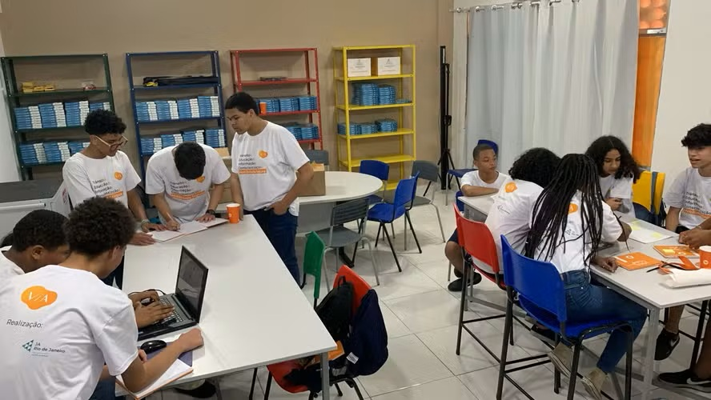
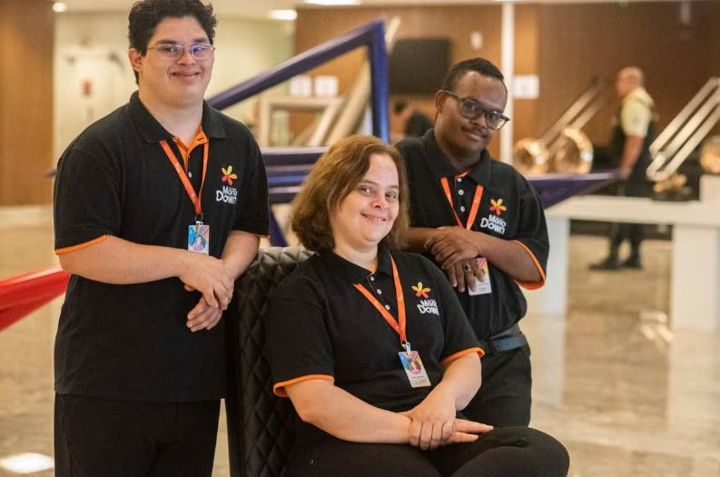
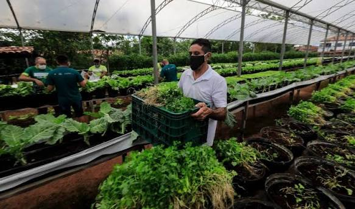
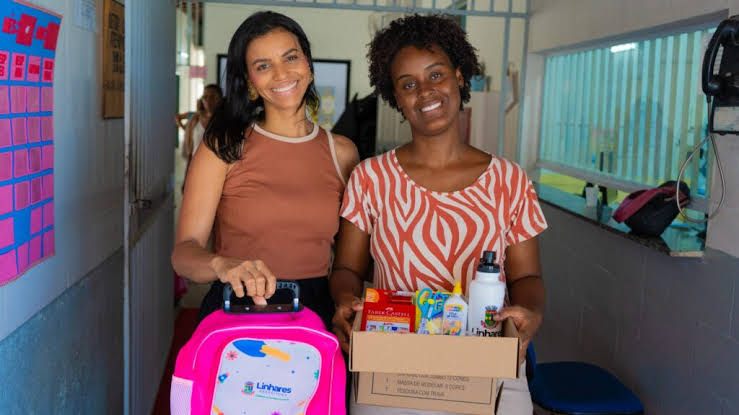
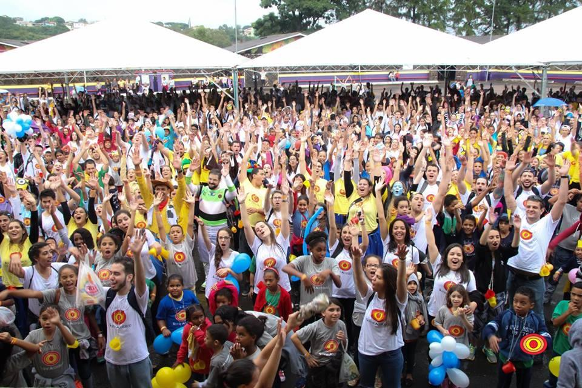

Missão
Promover educação, inclusão social e desenvolvimento comunitário, ampliando oportunidades para crianças, jovens e famílias em situação de vulnerabilidade social.
Há 12 anos o Instituto Florescer atua em comunidades vulneráveis, conectando famílias, voluntários e apoiadores em torno de projetos de educação, inclusão social e desenvolvimento comunitário.

O Instituto Florescer é uma organização não governamental, sem fins lucrativos, fundada em 2014 na Zona Leste de São Paulo. Atuamos em parceria com famílias, escolas públicas e empresas para ampliar o acesso à educação de qualidade, à inclusão social e a práticas sustentáveis nas comunidades onde estamos presentes.
Promover educação, inclusão social e desenvolvimento comunitário, ampliando oportunidades para crianças, jovens e famílias em situação de vulnerabilidade social.
Ser reconhecida, até 2030, como referência regional em projetos sociais integrados, medindo e comunicando com transparência o impacto gerado em cada comunidade atendida.
O Instituto nasceu de um grupo de dez voluntários que oferecia reforço escolar aos sábados em um salão de igreja comunitário. Em , formalizamos a organização como ONG e, desde então, ampliamos nossa atuação para quatro frentes: educação, inclusão social, apoio a famílias e sustentabilidade.
Em inauguramos nosso primeiro centro comunitário próprio e, em , ultrapassamos a marca de mil famílias atendidas anualmente.
Conheça algumas das frentes de atuação do Instituto Florescer. A lista completa, com objetivos, indicadores e resultados de cada projeto, está disponível na página de projetos.

Reforço escolar e incentivo à leitura para crianças de 6 a 12 anos, em parceria com escolas públicas municipais.
Conhecer o projeto
Oficinas de capacitação profissional e inclusão no mercado de trabalho para jovens e adultos com deficiência.
Conhecer o projeto
Hortas coletivas que geram renda complementar e promovem educação ambiental para famílias da comunidade.
Conhecer o projetoPrecisamos de pessoas dispostas a doar algumas horas por semana ou por mês em atividades educativas, administrativas, de comunicação ou de apoio a eventos. Não é necessário ter experiência prévia: oferecemos treinamento inicial para todas as áreas de atuação.
Sua contribuição financeira sustenta a compra de material escolar, alimentação das oficinas, transporte de famílias e manutenção do centro comunitário. Toda doação é registrada e prestada em contas nos relatórios de transparência.
Contribua uma única vez com o valor que puder, via Pix ou transferência bancária. Cada real apoia diretamente um projeto em andamento.
Torne-se um apoiador mensal e ajude a garantir a continuidade dos projetos ao longo do ano, com previsibilidade de orçamento.
Materiais escolares, alimentos não perecíveis e equipamentos também são bem-vindos. Consulte a lista de itens prioritários com nossa equipe.
Observação acadêmica: este projeto não implementa um gateway de pagamento real. As informações acima são conceituais, para fins de estudo de estrutura HTML5.
A partir de setembro, o projeto Educar para Crescer passa a atender mais duas escolas da região, beneficiando 90 crianças a mais.
Foram arrecadados mais de 2.300 itens de roupas de inverno, distribuídos entre as famílias atendidas pelos projetos sociais.
Publicamos o relatório de atividades e transparência financeira referente ao ano de 2025. Confira na página de projetos.




Instituto Florescer
Rua das Acácias, 245 — Jardim Esperança
São Miguel Paulista, São Paulo — SP
CEP 08010-000
Telefone: (11) 3000-0000
E-mail: contato@institutoflorescer.org.br
Dados de contato fictícios, criados exclusivamente para fins deste projeto acadêmico.
Segunda a sexta-feira, das 9h às 17h.